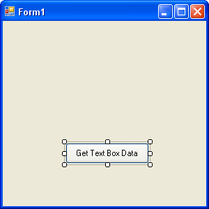
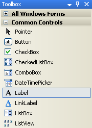
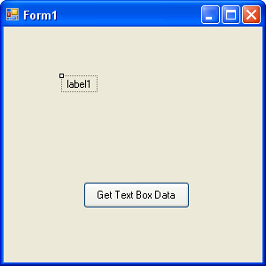
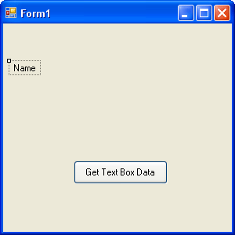
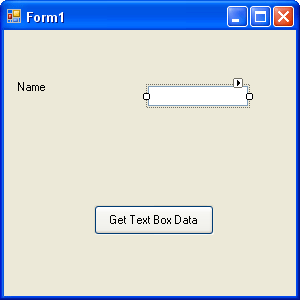
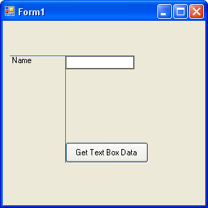

Variables in C#
Programmes work by manipulating data stored in memory. These storage areas come under the general heading of Variables. In this section, you'll see how to set up and use variables. You'll see how to set up both text and number variables. By the end of this section, you'll have written a simple calculator programme. We'll start with something called a String variable.
String Variables in C#.NET
The first type of variable we'll take a look at is called a String. String variables are always text. We'll write a little programme that takes text from a text box, store the text in a variable, and then display the text in a message box.
But bear in mind that a variable is just a storage area for holding things that you'll need later. Think of them like boxes in a room. The boxes are empty until you put something in them. You can also place a sticker on the box, so that you'll know what's in it. Let's look at a programming example.
If you've got your project open from the previous section, click File from the menu bar at the top of Visual C#. From the File menu, click Close Solution. Start a new project by clicking File again, then New Project. From the New Project dialogue box, click on Windows Application. For the Name, type String Variables.
Click OK, and you'll see a new form appear. Add a button to the form, just like you did in the previous section. Click on the button to select it (it will have the white squares around it), and then look for the Properties Window in the bottom right of Visual Studio. Set the following Properties for your new button:
Name: btnStrings
Location: 90, 175
Size: 120, 30
Text: Get Text Box Data
Your form should then look like this:

We can add two more controls to the form, a Label and a Text Box. When the button is clicked, we'll get the text from the text box and display whatever was entered in a message box.
A Label is just that: a means of letting your users know what something is, or what it is for. To add a Label to the form, move your mouse over to the Toolbox on the left. Click the Label item under Common Controls:

Now click once on your form. A new label will be added:

The Label has the default text of label1. When your label is selected, it will have just the one white square in the top left. When it is selected, the Properties Window will have changed. Notice that the properties for a label are very similar to the properties for a button - most of them are the same!
Change the following properties of your label, just like you did for the button:
Location: 10, 50
Text: Name
You don't really need to set a size, because Visual C# will automatically resize your label to fit your text. But your Form should look like this:

Move your mouse back over to the Toolbox. Click on the TextBox entry. Then click on your form. A new Text Box will be added, as in the following image:

Instead of setting a location for your text box, simply click it with your left mouse button. Hold your left mouse button down, and the drag it just to the right of the Label.
Notice that when you drag your text box around, lines appear on the form. These are so that you can align your text box with other controls on the form. In the image below, we've aligned the text box with the left edge of the button and the top of the Label.

OK, time to add some code. Before you do, click File > Save All from the menu bar at the top of Visual C#. You can also run your programme to see what it looks like. Type some text in your text box, just to see if it works. Nothing will happen when you click your button, because we haven't written any code yet. Let's do that now. Click the red X on your form to halt the programme, and you'll be returned to Visual C#.